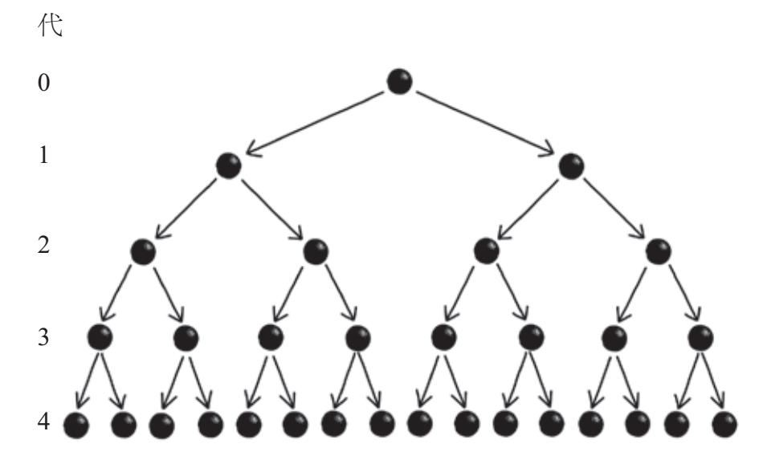
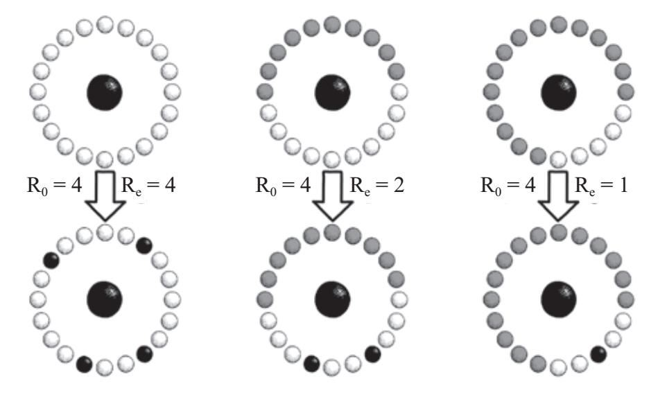

2014年的圣诞节假期，“地球上最快乐的地方”成了许多家庭痛苦的来源。成千上万的父母带着孩子去加利福尼亚州的迪士尼乐园度假，希望留下一生中难忘的美好回忆。但事实恰恰相反，有些人收到了他们意想不到的“纪念品”——一种具有高度传染性的疾病。
其中一位游客是4个月大的默比乌斯·卢珀，他的母亲阿里尔和父亲克里斯是迪士尼乐园的疯狂爱好者，他们于2013年结婚。作为一名训练有素的护士，阿里尔敏锐地意识到让自己早产的儿子仍在发育的免疫系统暴露在传染病中的风险有多大，因此她几乎从不带他走出房间。她还坚持说，任何人想在默比乌斯接种第一批疫苗之前去探望他，都要先行接种季节性流感、破伤风、白喉和百日咳疫苗。
2015年1月中旬，随着他的第一批疫苗接种完毕，阿里尔和克里斯迫不及待地带着默比乌斯去“体验那个神奇的乐园”。经过一天的游玩和与真人大小的卡通人物邂逅，卢珀一家感到心满意足，默比乌斯在迪士尼乐园完成了他的第一次冒险之旅。
然而，两周后的一天夜里，阿里尔无论如何也没法让她的儿子入睡，她发现默比乌斯的胸部和头后部都变红了。测量体温后，她发现默比乌斯正在发烧（102华氏度，39摄氏度）。由于无法让他的体温降下来，阿里尔给他们的家庭医生打电话，医生让她把孩子直接送去急诊室。他们在医院外遇到了一个穿着全套防护服的感染控制小组，阿里尔和克里斯也穿戴上面具和防护服，然后从后门进入负压隔离室。医生仔细地为默比乌斯做了检查，并让阿里尔抱住他不动，给他抽血做最后的测试。尽管以前从未见过这种疾病，但急诊室工作人员都怀疑他患的是麻疹。
始于20世纪60年代的疫苗接种计划效果显著，所以西方国家的人，包括医疗专业人员，很少有人见过麻疹的严重程度。但在像尼日利亚这样的欠发达国家，每年都会有成千上万的麻疹病例。麻疹的并发症包括肺炎、脑炎、失明，甚至是死亡。
2000年，美国正式宣布麻疹病毒在美国境内灭绝。[1]这意味着任何新病例都是由在国外感染的个体带到美国后传播的结果。2000—2008年的9年间，美国出现了557例麻疹确诊病例。但是，仅2014年就有667例。进入2015年，发源于迪士尼乐园的疫情在全美范围内迅速蔓延，影响了包括卢珀一家在内的数十个家庭。它传至21个州，有170多人感染，最终消失。迪士尼乐园的疫情是日益普遍的大暴发趋势的一部分。麻疹在美国和欧洲的感染率又一次上升，致使体质弱的人又一次暴露于危险中。
*
自从人类在进化历程中与黑猩猩及倭黑猩猩分道扬镳以来，就一直备受疾病的困扰。历史上的许多故事都可以由传染病串起来。比如，最近的发现表明，疟疾和结核病早在5 000多年前就影响了古埃及的重要地区。541—542年，查士丁尼瘟疫在全球范围内蔓延，据估计，当时全世界的2亿多人口中有15%都死于这场瘟疫。在科尔特斯入侵墨西哥后，当地人口从1519年的3 000万下降到50年后的300万，因为阿兹特克的医生无力抵抗西方征服者带来的他们前所未见的疾病。这样的例子不胜枚举。
由于致病的病原体过于复杂，即使在今天，依靠日益先进的医学技术，我们也无法将它们驱逐出我们的日常生活。比如，大多数人几乎每年都会患普通感冒。即便你自己没有染上流感，你身边也肯定会有人染上。在发达国家，患霍乱或结核病的人很少，但这些流行病在非洲的部分地区却并不罕见。有趣的是，即使在流行性疾病高发的地区，死亡也不是必然的结局。我们之所以对疾病有一种病态的迷恋，部分原因在于它们的发生似乎完全是随机的，这让一些人产生了难以言表的恐惧，但对生活在同一地区的其他人则完全没有影响。
然而，有一个鲜为人知但却非常成功的科学领域揭开了传染病的神秘面纱。数学流行病学通过提出预防措施来阻止HIV病毒的传播，并使埃博拉危机得到控制，因此在抗击流行病的大规模传染方面发挥了至关重要的作用。无论是强调反疫苗运动给我们带来的风险，还是抗击全球流行病，数学都是关乎生死的干预措施的核心因素，它一直在帮助我们消除地球上的疾病。
18世纪中叶，天花在世界各地流行。仅在欧洲，每年就约有40万人死于这种疾病，占欧洲大陆死亡人数的20%。即便幸存下来，也有一半的患者会失明或毁容。爱德华·詹纳是格洛斯特郡的一名乡村医生，他用实验证明了他的病人深信不疑的一个观点：做一名挤牛奶的女工可以预防天花。詹纳推断，大多数挤奶女工因为暴露于不会致死的牛痘病毒，对天花具有了一定的免疫力。
为了验证他的设想，1796年，詹纳开展了一项开创性的疾病预防实验，虽然如今看来它是非常不道德的。[2]他从感染了牛痘的挤奶女工手臂上的一个病灶中提取脓液，并将其涂抹在8岁男孩詹姆斯·菲普斯的手臂上。这个男孩迅速发病、发烧，但10天后他康复了，与接种前一样健康。但仅接种牛痘似乎还不够，两个月后詹纳又给菲普斯接种了天花。几天过去了，菲普斯并没有出现天花发病症状，詹纳由此得出结论，菲普斯对天花有了免疫力。詹纳将这一过程命名为“疫苗接种”。1801年，詹纳记录下他对这一发现的期待，“天花是人类历史上最可怕的灾难，我们这样做的最终目的就是消灭天花”。将近200年后，由世界卫生组织开展的联合疫苗接种工作将他的梦想在1977年变成了现实。
詹纳研发疫苗的故事将天花和现代疾病预防史联系起来。数学流行病学也在试图消灭天花的过程中找到了它的根源，但这一学科的起源时间比詹纳的实验还要早。
*
早在詹纳提出接种疫苗的想法之前，为了免受日益增长的天花发病率的影响，印度人和中国人已经开始了预防接种。与疫苗接种相反，预防接种是将身体暴露在少量与疾病相关的物质中。在天花的例子中，通常的方法是采集感染者的粉末状痂并吹到接种者的鼻子上，或将脓抹到手臂的伤口上。这样做是为了诱发一种较温和的天花，虽然它令人不快，但危险性要小得多，并且可以为患者提供终身免疫力，使其免受全面暴发疾病的严重症状的影响。这种做法迅速传播到中东，并在18世纪初传入天花肆虐的欧洲。
尽管预防接种的方法看似有效，但也有很多批评者。由于有些患者的免疫力下降，同样的做法不能保护他们免受第二次更严重的天花感染。也许对预防接种更不利的事实是，有2%的患者死于这种治疗方法。英王乔治三世4岁的儿子奥克塔维斯的死亡就是其中一个引人注目的案例，但这对提升公众对该做法的认识作用甚微。虽然2%的死亡率远低于天花自然传播造成的20%~30%的死亡率，但批评者认为，许多接受预防接种的人可能永远不会染上天花，而广泛的治疗却带来了不必要的风险。同时，有观察表明，预防接种的患者会像自然感染的天花患者一样传播天花。然而，在缺乏医学对照试验的情况下，量化预防接种的效果和消除试验过程中的干扰并不是一件容易的事。
这一公共卫生问题引起了瑞士数学家丹尼尔·伯努利的兴趣。在伯努利众多的数学成就中，他通过流体动力学方面的研究建立了一个重要的方程，可以解释机翼如何产生飞机飞行所需的升力。然而，在学习高等数学之前，伯努利获得的第一个学位与医学有关。他后来将关于流体流动的研究和医学知识结合起来，发现了测量血压的第一套规程。通过用空管刺穿血管壁，并观察管内血液的上升高度，就可以确定血压。但他发现的这种方法也有令人不太舒服的地方，比如将玻璃管直接插入患者的动脉。这种方法使用了170多年，才被侵入性较小的方法取代。[3]伯努利广博的学术背景也引导他将数学方法应用于量化预防接种的整体效果，而传统医生只能靠猜测来回答这个问题。
伯努利提出了一个方程，用它描述从未患过天花也没有抗体的特定年龄人群的比例。[4]他用埃德蒙·哈雷校勘的生命表校准他的方程，这张生命表描述了存活到任意给定年龄的活产婴儿的比例。这样一来，他就能够计算患有该疾病后康复的人和死亡的人的比例。再根据第二个方程，伯努利可以计算出如果每个人都接受常规预防接种，将会挽救多少生命。他得出的结论是，如果进行普遍预防接种，有近50%的婴儿能活到25岁，尽管相较今天的标准这个结果令人沮丧。但如果让天花在人群中自由肆虐，就只有43%的婴儿能活到25岁，因此这是一个显著的提升。或许更值得注意的是，他证明了这种简单的医疗干预可以使平均预期寿命提高3年以上。对伯努利来说，政府进行医疗干预的理由是显而易见的。在论文中他写道：“我只是希望，在一个与人类福祉如此密切相关的问题上，如果对由简单的分析和计算即可得到的结果都不太清楚，就不应该做出决策。”
如今，数学流行病学的目标并没有偏离伯努利最初的设想。有了基本的数学模型，我们就可以着手预测疾病的发展，了解潜在干预措施对疾病传播的影响。有了更复杂的模型，我们就可以回答与高效分配有限资源相关的问题，或者厘清一些公共卫生干预措施可能产生的意外结果。
19世纪末，印度殖民地恶劣的卫生条件和拥挤的生活环境引发了霍乱、麻风病和疟疾3种致命的流行病，造成数百万人死亡。[5]然而，除了这3种疾病之外的第4种传染性疾病，将带来流行病学史上最重要的发展之一。
没人知道这种疾病是如何在1896年8月的孟买传播开来的，但毫无疑问的是，它造成了巨大的破坏。[6]其原因可能是，一艘载有几名偷渡者的商船从英国殖民地香港带回了这种病。两周后，这艘船停靠在孟买港务局。当汗流浃背的码头工人忙着在30摄氏度的高温下卸货时，几名偷渡者趁机下了船，匆匆走进城市的贫民窟。与此同时，他们也将自己身上的“货物”卸了下来，它先导致孟买陷入混乱，之后是印度的其他地方。这些偷渡者就像携带着跳蚤的大老鼠，跳蚤是鼠疫致病菌——耶尔森菌（鼠疫杆菌）——的主要携带者。
孟买的第一例瘟疫病例出现在遍布港口的曼德维地区。随后，这种疾病在整个城市肆无忌惮地蔓延开来，到1896年年底，鼠疫每月造成8 000人死亡。到1897年年初，瘟疫蔓延到印度西部的浦那，随后传至整个印度。1897年5月，严格的遏制措施似乎已经消灭了瘟疫。然而，这种疾病在之后的30年内每隔一段时间就会袭击印度，共造成1 200多万人死亡。
*
1901年，一位名叫安德森·麦肯德里克的年轻苏格兰军医在一次鼠疫暴发期间来到印度。他前后在这里待了近20年的时间，做研究，进行公共卫生干预，对人畜共患疾病有了更深入的了解。人畜共患疾病，比如猪流感，可以在动物和人类之间传播。最终，麦肯德里克因在研究和实践方面做出的贡献而成为卡绍利的巴斯德研究所的负责人。讽刺的是，在卡绍利他感染了布鲁氏菌病，这是一种因饮用未经巴氏消毒的牛奶而引发的衰竭性疾病。结果，他被送回苏格兰休了几次病假。
在一次休病假期间，他因受到早些时候与印度医生、诺贝尔奖获得者罗纳德·罗斯爵士会面的启发，决定学习数学。在印度的最后几年，他把主要时间都放在了数学学习和研究上。1920年他感染了热带肠病，只能回到家中。
回到苏格兰后，麦肯德里克成为爱丁堡皇家内科医学院的实验室负责人。在这里，他遇到了一位名叫威廉·科马克的年轻有为的生物化学家。两人初次见面后不久，科马克不幸在一场毁灭性的爆炸事故中双目失明。但这并未阻挡他与麦肯德里克的合作。受到麦肯德里克在印度收集的孟买瘟疫暴发数据的启发，他们开展了数学流行病学史上最具影响力的研究。[7]
他们一起建立了关于疾病传播的最早和最出色的数学模型之一。为了使他们的模型有效，两个人根据病情将人口分为三个基本类别。尚未患病的人被标记为“易感人群”，这听上去多少有点儿不吉利，因为所有人都被假定为天生易感并且能够被传染。已染病并能将疾病传染给易感人群的人被标记为“感染人群”。第三种被委婉地标记为“移除人群”，通常情况下，他们指患过病并且凭借免疫力得以康复的人，或者由于患病而死亡的人。移除人群不会再传播疾病。这种关于疾病传播的经典数学表示法被称为S–I–R模型。
在他们的论文中，科马克和麦肯德里克证明了S–I–R模型的实用性，因为它能准确地再现孟买在1905年暴发的瘟疫病例数量的升降。自建立以来的90年间，S–I–R模型（及其变体）在描述其他疾病方面取得了巨大的成功。从拉丁美洲的登革热到荷兰的猪丹毒和比利时的诺如病毒，S–I–R模型可以为疾病预防提供重要的经验和教训。
近年来，零时工合同的出现和临时就业的增加（新兴零工经济的一种标志），促使人们即便生病也要坚持工作。虽然旷工已成为大量研究的主题，但直到最近人们才开始理解“出勤主义”的代价是什么。综合运用数学建模和工作场所出勤数据的研究，得出了一些令人吃惊的结论。为减少员工缺勤而采取的措施（包括减少带薪病假）会导致不顾糟糕的身体状况而出勤的人数显著增加，从而带来更多病痛，降低整体工作效率。
出勤主义问题在医疗保健和教育行业尤为普遍。讽刺的是，护士、医生和教师对他们的保障对象怀有过高的责任感，以至于不顾身体不适坚持上班，将自身置于危险之中。然而，酒店行业可能是出勤主义问题最严重的行业。一项研究发现，2009—2012年的4年间，仅在美国就有1 000多起诺如病毒暴发事件与食物污染有关。[8] 21 000多人因此患病，70%的暴发事件与染病的食品服务人员有关。
在该研究得出结论的5年后，墨西哥烧烤快餐店成为出勤主义有害论的引人注目的受害者。2013—2015年，墨西哥烧烤快餐店被评选为美国最棒的墨西哥餐厅品牌。尽管有带薪病假制度，但它在美国各地的许多分店的工作人员都报告说，管理人员在他们生病时会威胁他们说，如果不来上班就等着被炒吧。
2017年7月14日，保罗·康奈尔到墨西哥烧烤快餐店弗吉尼亚斯特林分店享用卷饼。当晚，一个姓名不详的餐厅员工尽管有胃痉挛和恶心的症状，但仍坚持打卡上班。24小时后，康奈尔在医院接受静脉滴注治疗，并出现了胃绞痛、恶心、腹泻和呕吐等症状，与诺如病毒感染的症状一致。除他之外，其他135名员工和客户也感染了病毒。在病毒暴发后的5天内，墨西哥烧烤快餐店的股价暴跌，公司市值蒸发了10亿多美元，遭到了股东的集体起诉。2017年年底，墨西哥烧烤快餐店甚至没有进入美国最受欢迎的墨西哥餐厅榜单的前6%。
S–I–R模型展示了不带病上班的重要性。待在家里直到完全恢复健康，你就能有效地将自己从易感者变为移除者。该模型证明，通过减少将疾病传播给易感人群的机会，这种简单的行动可以减小疫情暴发的规模。不仅如此，不带病工作也会让你更快地恢复健康。S–I–R模型揭示出，如果每个感染者都能遵循这种做法，就不会有太多的餐馆、学校和病房关闭，我们也会因此受益。
*
然而，S–I–R模型之所以声名大噪，或许不只是因为它的描述能力，也是因为它的预测能力。S–I–R模型不仅能回顾过去的流行病，它还能让科马克和麦肯德里克向前看，即预测疾病暴发的动态过程和了解疾病进展的神秘模式。事实上，他们使用S–I–R模型来解决当时流行病学领域的一些最具争议性的问题。比如，导致疾病消亡的原因是什么？疾病是否只感染易感人群？一旦没有了易感人群，疾病是不是也就无处可去了？或者说，随着时间的推移，致病病原体会变得越来越弱，以至于无法再感染健康人群了？
在两位苏格兰科学家的颇有影响力的论文中，他们证明这些说法都不是必然的。在模拟流行病暴发末期的情况时，他们发现人群中总有一些易感个体。这或许与我们的直觉（受电影和媒体讲述的恐慌故事的影响）形成了鲜明的对比，因为我们总以为疾病消失是因为不再有人感染了。实际上，随着易感人群恢复健康或死亡，余下的感染人群和易感人群之间的接触变得非常少，以至于感染人群在被移除（恢复健康或死亡）之前再也没有机会传播疾病。根据S–I–R模型的预测，流行病暴发最终会因缺乏感染人群而消失，而不是缺乏易感人群。[9]
在20世纪20年代流行病建模者的小圈子中，科马克和麦肯德里克的S–I–R模型是一项杰出的贡献。它把关于疾病进展的研究提升到比之前的纯粹描述性研究更高的水平上，让我们得以远眺未来。然而，它所提供的洞察视角却受到模型的狭窄基础的限制，诸多假设限制了它能做出有效预测的情景，比如，疾病的人际传播速度是恒定的，感染过程是瞬间发生的，人口数量不变。这些假设虽然有些时候对描述某些疾病有用，但并不适用于大多数疾病。
讽刺的是，科马克和麦肯德里克用来“证实”其模型的孟买瘟疫数据，却违背了其中一些假设。从源头上说，孟买瘟疫并不是从人际传播开始的，而是由携带跳蚤的老鼠传播的，跳蚤身上又携带着瘟疫细菌。他们的模型还假设病毒携带者和易感者之间的传播速度是恒定的。事实上，孟买瘟疫受季节性因素的强烈影响，1~3月跳蚤密度和细菌丰度的水平急剧上升，导致病毒传输速度增加。
然而，未来的数学家对S–I–R模型进行了影响深远的调整，放松了它的限制性假设，也扩大了数学工具所描述疾病的范围。
*
对原始S–I–R模型进行的最初一个调整是，让它表示感染者无法获得免疫力的疾病。其中典型的是性传播疾病，比如淋病，这类疾病根本不存在移除人群。淋病患者在康复后仍有可能再次感染，而且没有人死于淋病。这类模型通常被称为S–I–S模型，模拟了个体从易感者到感染者再回到易感者的疾病进展模式。由于易感人群不会耗竭，而会随着患者的康复而更新，所以根据S–I–S模型的预测，这类疾病可以自持续，或者变成地方病，甚至存在于没有人出生或死亡的孤立人群中。在英格兰，淋病的流行态势使其成为第二常见的性传播疾病，2017年报告的病例超过44 000例。
事实上，要想恰当地表示淋病等性传播疾病，就需要对基本模型进行更多调整。它们的进展模式不像普通感冒之类的疾病那么简单，每个人都可以把感冒传染给其他人。对于性传播疾病，感染者通常仅感染符合其性取向的人。由于大多数性接触者都是异性恋，因此最显而易见的数学模型将人群分为男性和女性，并且大多数感染只发生在这两个群体之间，而不是单个群体内部。只考虑异性相互作用的二分性模型而得出的疾病传播速度，要比假设每个人都可以将疾病传播给其他人而不考虑性别和性取向的模型得出的传播速度慢。然而，这种性传播疾病模型充满了潜在的陷阱。
我对自己的5岁生日一直记忆犹新，因为那时我年仅40岁的母亲被诊断患有宫颈癌。她忍受了一轮又一轮痛苦的化学治疗和放射治疗，身体日渐虚弱。幸运的是，疗程结束时，她的癌症已被治愈。后来我了解到宫颈癌是少数主要由病毒引发的一种癌症，通常通过性交传播。当我发现我的父亲可能携带了导致我母亲患癌的病毒时，这让我很难接受。在母亲的癌症复发后，他对她呵护有加。母亲在45岁生日的前几周去世了，之后是父亲用他的意志力维系着这个家没有散。即使父亲不知情，我仍忍不住问：怎么会是他造成的呢？
事实证明，绝大多数引发宫颈癌的HPV（人乳头状瘤病毒）感染都是通过性交传播的。超过60%的宫颈癌是由两种HPV引发的。[10]事实上，HPV是世界上最常见的性传播疾病。[11]男性可以无症状携带病毒并将其传给他们的性伴侣，这使得宫颈癌成为女性群体中的第四大常见癌症，每年全世界约有50万新增病例，有25万人因此死亡。
2006年，第一批针对HPV的革命性疫苗获得了美国食品药品监督管理局的批准。不出所料，考虑到宫颈癌的高发病率，人们对这些疫苗抱有很大希望。在疫苗配发期间，英国进行的一项研究表明，最有效的策略是给12~13岁的少女进行免疫接种。[12]考虑到异性疾病传播的数学模型，其他国家的相关研究证实仅给女性接种是最佳行动方案。[13]
然而，这些初步研究最终证明，任何数学模型的好坏都取决于支撑它的假设和使它参数化的数据。这些分析中的大多数都忽略了HPV在其建模假设中的一个重要特征：疫苗预防的HPV菌株在女性和男性群体中都能引发一系列非宫颈疾病。[14]
如果你曾经长过疣，那么你至少携带了5种HPV中的一种。英国有80%的人在其一生中的某个时间会感染一种HPV菌株。除了引发宫颈癌外，16型和18型HPV还导致了50%的阴茎癌、80%的肛门癌、20%的口腔癌和30%的咽喉癌。[15]演员迈克尔·道格拉斯在咽喉癌被治愈后，被问到是否后悔无节制地抽烟、喝酒，他坦率地告诉《卫报》记者他不后悔，因为他的癌症是因口交而感染HPV引发的。在美国和英国，由HPV引发的大多数癌症并不是宫颈癌。[16]值得注意的是，10例肛门生殖器疣中有9例是由6型和11型HPV引发的。[17]在美国，与所有非宫颈HPV感染相关的医疗费用中有约60%被用于治疗这些疣。[18]宫颈癌是与HPV有关的故事中重要的组成部分，但不是全部。
2008年，HPV疫苗首次被推出，德国病毒学家哈拉尔德·楚尔·豪森因发现引发宫颈癌的HPV而被授予诺贝尔医学或生理学奖。但是，诺贝尔奖委员会和世界上的大多数国家都忽略了HPV与其他癌症和疾病的联系。英国的一项研究确实对非宫颈癌做出了解释，但该研究并不能确定这一点，因为当时人们对疾病的症状和疫苗接种对非宫颈癌的影响还不太了解。大多数模型表明，通过对足够高比例的女性进行疫苗接种，未接种的男性患与HPV相关疾病的概率也会下降。公众可能只知道HPV对宫颈癌（像传染病一样传播的普通癌症）的影响，因此他们毫无疑问地接受了仅为女性接种疫苗的决定。如果男性不会患由HPV引发的癌症，他们为什么要接种疫苗呢？
想象一下，如果开发出针对引发艾滋病的HIV疫苗，规定只对女性免费接种，并希望男性能通过女性的免疫力得到保护，势必会引起公众的强烈抗议。除了疫苗接种局部覆盖率和疫苗低效等问题外，批评人士可能还会提出的重要问题是，该如何保护男同性恋？HPV疫苗也面临同样的问题。由于早期研究忽略了数学模型中的同性恋关系，从而忽视了同性配对的影响。基于性网络（包括同性恋关系）的模型，比仅考虑异性恋关系的模型得出的疾病传播率更高。[19]男同性恋人群的HPV患病率显著高于一般人群。[20]在美国，男同性恋人群的肛门癌发病率是普通人群的15倍多，达到每10万人中有35人，这与宫颈癌筛查技术出现前的宫颈癌发病率相当，并且显著高于美国目前的宫颈癌发病率。[21]在重新校准模型时，考虑到同性恋关系、关于非宫颈癌预防的新知识，以及疫苗接种所能提供的保护期限等因素，为男孩和女孩同时接种疫苗变成了一个有效的选择。
2018年4月，英国国家医疗服务体系终于向年龄为15~45岁的男同性恋者提供HPV疫苗接种。同年7月，基于新的成本–效果研究，英国所有男孩都可像同龄女孩一样接种HPV疫苗。[22]值得庆幸的是，我的女儿和儿子将获得同等的保护，以免感染上杀死他们祖母的病毒。这件事表明，即使最精妙且复杂的数学模型得出的结论，其有效性也只和它们的最弱假设差不多。
HPV感染的另一个混淆因素是无症状病毒携带者。有些人携带了病毒，传染了其他人，但自身却没表现出任何症状。出于这个原因，为了如实地展示疾病，通常会对基本的S–I–R模型进行改造，将被感染后不表现出任何无症状但能传播疾病的人群纳入其中。这类人群被称为携带者，他们将S–I–R模型变为S–C–I–R模型，对于展示许多疾病的传播至关重要，包括我们这个时代最致命的一些疾病。
一些患者感染HIV几周后会出现短期的流感样症状，他们的严重程度各不相同，有些携带者甚至没有任何不适感。尽管没有明显的表面症状，但HIV会慢慢损害患者的免疫系统，致使他们容易受到结核病或癌症等其他病毒的感染，而免疫系统健全的人则可能不会被感染。感染HIV的末期患者会被诊断为患有免疫缺陷综合征（艾滋病）。艾滋病成为流行病的主要原因之一是，它有很长的潜伏期，目前它已遍布全世界并且仍在蔓延。不知道自身已被感染的携带者比知道自己是HIV阳性的人传播疾病的速度快得多。在过去的30年甚至更长时间里，HIV一直是每年全世界传染病死亡案例的头号“推波助澜者”。
人们通常认为HIV源于20世纪早期非洲中部的非人灵长类动物。当人类捕获被感染的灵长类动物时，猿猴免疫缺陷病毒（SIV）的突变病毒跨物种传播给了人类种群，并且通过体液交换在人与人之间传播。可跨物种传播的动物源性疾病，比如原始的HIV菌株，是对公众健康的最大潜在威胁之一。
2018年，英国副首席医疗官乔纳森·范–塔姆教授特别指出，H7N9病毒——一种新的禽流感菌株——很有可能成为下一次全球流感的起因。往前回溯，20世纪最致命的流行病是西班牙流感，它在世界范围内感染了大约5亿人。西班牙流感的死亡率仅为10%左右，而H7N9的致死率大约为40%。幸运的是，到目前为止，H7N9尚未获得在人与人之间传播的重要能力，否则H7N9也能达到西班牙流感的规模。尽管动物实验表明H7N9只差3个碱基对的突变，就能获得在人与人之间传播的能力，但或许就像它的前身H5N1一样，H7N9永远不会获得这种能力。下一次全球大瘟疫很可能根本不是源于一种新疾病，而是我们已经见过很多次的疾病。
2013年年底的一个下午，两岁的埃米尔·乌尔牟诺正在几内亚偏远的村落马利安多与其他孩子玩耍。这群孩子最喜欢的一个游戏地点就是村外的一棵巨大的空心可乐树，因为它非常适合做藏身之处。又深又暗的树洞也为一群吃昆虫的无尾蝙蝠提供了理想的栖息地。埃米尔在蝙蝠栖身的树上玩耍时，接触了新鲜的蝙蝠粪便，以及活的蝙蝠。
12月2日，埃米尔的母亲注意到平常精力旺盛的埃米尔昏昏欲睡，看上去非常疲倦。她摸了摸埃米尔的额头，发现他在发烧，于是她把埃米尔放到床上休息。然而，埃米尔很快就开始呕吐并排出黑色的稀便。4天后，埃米尔离开了这个世界。
一直细心照顾他的母亲也感染了这种疾病，并在一周后去世。接下来，埃米尔的姐姐菲洛米内离世了，他们的祖母在新年的第一天也去世了。村里的助产士在这家人生病期间一直照顾着他们，她无意间把这种病带到了邻近的村庄，又传播到最近的盖凯杜镇医院，因为染病的她去那里寻求治疗。一位照顾助产士的卫生员又把疾病传到了盖凯杜镇东部约50英里的马森塔医院，在那里她传染了与她接触的一位医生。接下来，这位医生在距离盖凯杜镇西北80英里的基西杜古市传染了他的兄弟，病毒以这样的传播渠道慢慢向外蔓延。
3月18日，感染这种病的人数之多和程度之严重使形势变得严峻起来。卫生部门的官员向社会公布了这种尚未确诊的出血热疫情的暴发，“它的蔓延速度堪比闪电”。两周后，无国界医生组织称它的传播规模“前所未有”。从这个时间点开始，埃米尔·乌尔牟诺这个原本毫不起眼的孩子将被世界永远铭记。不幸的是，他将成为臭名昭著的“零号患者”：病毒从动物传播到人类的第一个受害者，他造成了有史以来最大的、最难以控制的埃博拉疫情。
我们要感谢科学家和卫生保健专业人士在分析这种流行病时做出的巨大努力，使我们了解到这种疾病的进展。接触者追踪法使流行病专家可以通过多代感染个体向前回溯，回到原始病例——“零号患者”埃米尔。通过让感染个体列出他们在疾病潜伏期和发病后接触过的所有人，科学家可以构建他们的接触网络。再通过对网络中的个体多次迭代，就可以查明疾病传播的单一源头。这种方法除了可以让我们了解疾病传播的复杂模式并给出预防未来疫情暴发的建议之外，还有助于我们采取实时措施控制疾病的传播。它可以为早期阶段的疾病控制提供有效的策略。凡在潜伏期内与感染个体有过直接接触的人都要隔离，直到确认他们未患病或未被感染。如果被感染，他们就要隔离到不再有传播疾病的可能为止。
*
然而在实践中，接触网络往往是不完整的，并且有许多疾病携带者未被发现。事实上，有许多个体因为处在潜伏期——感染后和症状出现前的时间窗，甚至不知道自己患了这种病。埃博拉病毒的潜伏期可长达21天，但平均为12天左右。2014年10月，非洲西部的疫情显现出席卷全球的态势。英国政府以保护公民的名义，宣布在5个主要机场和位于伦敦的欧洲之星终点站设立埃博拉病毒检测点，对来自高危国家的乘客进行更严格的筛查。
2003年SARS（严重急性呼吸综合征）疫情暴发期间，加拿大的一项类似计划筛查了近50万名旅客，其中没有一人被发现有体温升高的患病迹象。这项计划花掉了加拿大政府1 500万美元。事后来看，SARS筛查计划是一项徒劳的举措，虽然它可能在某种程度上让加拿大公众觉得他们是安全的，但它本身是一种无效的干预策略。
考虑到这些花费和引起的不必要的焦虑反应，伦敦卫生与热带医学院的数学家团队提出了一个将潜伏期包含在内的简单数学模型。[23]考虑到埃博拉平均12天的潜伏期和从塞拉利昂弗里敦到伦敦的6.5个小时的飞行时间，数学家算出只有大约7%的埃博拉病毒携带者在登机时会被这些昂贵的新措施检测出来。他们建议，最好把这笔钱花在对非洲西部的人道主义救援上，这样更能直击问题的要害，从而降低埃博拉病毒传播到英国的风险。这是数学干预的一个最佳的例证——简单、果断并以证据为基础。与其猜测筛查措施的可能效果，不如利用简单的数学图示，来提供强有力的洞见，并指导政策的制定。
用于确认埃米尔·乌尔牟诺为零号患者的传播途径并不唯一。这种疾病通过多条不同的路径从马利安多辐射出来。事实上，在早期阶段，它通过多个独立渠道以指数方式复制。一个人传染了另外三个人，这三个人继续传染给其他人，疫情由此暴发。一场疫情会流行起来还是逐渐消亡是由一个简单的数字决定的，即疫情特有的基本传染数。
一种特定疾病的易感人群就像征服者到来前的16世纪的中美洲原住民一样。被一个新引入的疾病携带者感染的个体的平均数量被称为基本传染数，通常表示为R0。如果一种疾病的R0小于1，那么感染将迅速消失，因为每个感染者只能将疾病平均传染给不到一个人，所以疫情无法持续传播。如果R0大于1，那么疫情将呈指数增长。
以SARS等疾病为例，它的基本传染数为2。患上该疾病的第一个人叫零号患者，他将这种疾病传播给另外两个人，这两个人又将疾病分别传播给另外两个人，以此类推。图7–1展示了表征感染初期的指数增长。如果传播能像这样继续下去，当进展链达到10代时，就会有超过1 000人被感染。再往下传10代，感染者将增至100多万人。
在实践中，正如病毒式观念的传播、金字塔计划的扩展、细菌菌落的增长或群体的增殖一样，基本传染数预测的指数增长很少能维持好几代。由于感染人群与易感人群的接触频率不断减少，疫情到达峰值后将开始下降。最终，即使感染人群不在了，疫情也正式结束了，一些易感者仍然存在。早在20世纪20年代，科马克和麦肯德里克就提出了一个公式，用基本传染数预测在疫情结束时有多少易感个体未与感染者接触过。如果R0约为1.5，根据科马克和麦肯德里克的公式，若不采取干预措施，2013—2016年的埃博拉疫情将困扰全球58%的人口。相比之下，脊髓灰质炎疫情的R0约为6，根据科马克和麦肯德里克的预测，这意味着在没有干预的情况下只有0.25%的人能安然存活。

图7-1 基本传染数R0为2的疾病的指数传播。最初的感染个体被定为零代，到第4代时新感染者的数量达到16人
基本传染数是对疫情的一个普遍有效的描述语，因为它包含了疾病传播的所有微妙之处。从感染在体内的发展方式到传播模式乃至传播的社会结构，它捕捉到疫情的所有关键特征，让我们能做出相应的反应。R0通常由三个部分组成：人口规模，易感人群的感染率（通常称为感染力），疾病的康复率或死亡率。前两个因素增加，R0也会增加，而恢复率增加，R0则会减少。人口规模越大，疾病在个体之间的传播速度就会越快，疫情暴发的可能性也越大。个体康复得越快，他们将疾病传染给他人的时间就越少，疫情暴发的可能性也越小。对于许多人类疾病，我们只能控制前两个因素。虽然抗生素或抗病毒药物可能会缩短一些疾病的过程，但康复率或死亡率通常是引发疾病的病原体固有的特性。有效传染数（通常表示为Re）是一个与R0密切相关的量，是指由一个感染者在疫情进展的某一时间点引起的二次感染的平均数量。如果通过干预使Re小于1，疾病就会消亡。
尽管R0对疾病控制至关重要，但它并没有告诉我们一种疾病对感染者而言有多严重。像麻疹这样的传染性极强的疾病，它的R0为12~18，但对个体而言通常认为它对个体的严重程度不像埃博拉病毒那样致命，虽然埃博拉病毒的R0只有1.5左右。尽管麻疹传播迅速，但其病死率小于埃博拉病毒的50%~70%的病死率。
也许令人惊讶的一点是，病死率高的疾病往往传染性较小。如果一种疾病过快地使过多的感染者死亡，它的传播率就会降低。感染者病死率高且能有效传播的疾病非常罕见，通常仅限于灾难电影。尽管高病死率显著增加了人们对疫情的恐惧，但R0高而死亡率低的疾病最终可能会因为感染者众多而造成更多人死亡。
数学模型表明，一旦我们决定有必要控制某种疾病的传播，病死率对于减慢传播速度就是无用的信息了。然而，构成R0的三要素表明，重要的干预措施可以在致命疫情大规模暴发前将其终止。
减少疾病传播的最有效选择之一就是接种疫苗。通过直接把人从易感者转变为移除者，人为绕过感染阶段，就能有效减小易感人群的规模。然而，疫苗接种通常是一种预防措施，旨在降低疫情暴发的可能性。一旦疫情全面暴发，在有限的时间内开发和测试有效的疫苗通常不切实际。
另一种应对动物疾病的策略是扑杀，它对有效传染数Re具有同样的递减效应。2001年，英国深陷口蹄疫危机，于是决定采取扑杀策略。通过屠宰被感染个体，感染期从最多三周降至几天，大大减少了有效传染数。然而，在这次疫情中，仅扑杀被感染的动物并不足以控制疾病。一些被感染动物不可避免地漏网，并感染了附近的其他动物。作为应对，政府实施了环式扑杀策略，屠宰受影响农场方圆3千米内的所有动物（不管它们是否被感染）。乍一看，杀死未感染动物似乎是毫无意义的做法。然而，它减少了局部区域易感染动物的数量，数学模型告诉我们这样做能够减缓疾病的传播。
如果在未接种疫苗的人群中突然暴发某种疾病，扑杀显然不可行。但是，隔离被证明是降低传播率的极其有效的方法，传染数也会由此降低。隔离感染者降低了传播率，隔离健康个体减少了有效易感人群，这两种行动都有助于减少有效传染数。事实上，欧洲上一次天花疫情发生在1972年的南斯拉夫，由于采取了极端的检疫措施，疫情迅速得到控制。多达1万名潜在感染者在征用的酒店里隔离，由武装警卫看守，直到没有新增病例的威胁。
在不那么极端的例子里，用数学建模的方法就可以推导出感染者的最有效隔离时长。[24]通过权衡隔离健康个体的经济成本和疫情扩大的风险，数学模型还可以帮助我们决定是否对一定比例的未感染人群进行隔离。出于后勤保障或伦理方面的原因，对疾病进展进行实地研究是不切实际的，在这种情况下数学模型就可以真正发挥作用。比如，在疾病暴发期间，出于研究目的而剥夺一小部分人获得医疗干预的权利，这样的做法是不人道的。同样，在现实世界中对许多人进行长期隔离是不切实际的。然而，使用数学模型则不存在这样的顾虑。我们可以对隔离所有人、不隔离任何人或只隔离一部分人的模型进行测试，以平衡这种强制隔离产生的经济影响和对疾病进展的影响。
这也是数学流行病学真正的魅力所在，它能够测试在现实世界中不可行的场景，有时甚至会得出令人惊讶和反直觉的结果。比如，数学研究表明，对于像水痘这样的疾病，隔离可能是错误的策略。为了避免一些相对温和的疾病，将患病和未患病的儿童隔离开，无疑会导致很多人缺课和旷工。或许更重要的是，数学模型证明，对健康儿童进行隔离虽然可以将他们的患病年纪推迟，但到那时水痘引发的并发症可能会更严重。如果没有数学模型的干预，那么像隔离这种看似合理的策略带来的反直觉效应，可能永远无法被人理解。
虽然检疫和隔离对某些疾病产生了意想不到的结果，但对于其他疾病，它们可能根本不适用。疾病传播的数学模型已经确证，检疫策略的成功与否取决于传染性达到峰值的时间。[25]如果一种疾病在早期的传染性很强，那么患者可能在被隔离之前的无症状状态下已经将疾病传播给大量潜在的受害者。幸运的是，在埃博拉疫情中，许多潜在的控制途径被阻断，大多数传播都发生在患者出现症状之后，此时他们已经被隔离了。
事实上，埃博拉病毒的传染期甚至可延伸至患者死亡之后，那时他们尸体上的病毒载量仍然很高，并且有可能感染给与其接触的人。值得注意的是，塞拉利昂的一名传统治疗师的葬礼成为疫情早期传播的引爆点之一。随着几内亚各地的病例迅速增加，人们变得越发绝望。由于这位治疗师声名远播，几内亚的埃博拉患者越过边境进入塞拉利昂，向这位著名的治疗师咨询，此时她相信自己可以治愈这种疾病。不出所料，治疗师很快就染病去世了。她的葬礼几天之内就吸引来了数百名哀悼者，他们全程参与，包括洗沐和触摸尸体。这个事件直接导致350多人感染埃博拉病毒死去，并加快了埃博拉疫情在塞拉利昂的全面暴发。
2014年，在埃博拉疫情的高峰期，一项数学研究得出结论：约有22%的新感染病例可归因于已故的埃博拉病毒感染者。[26]该研究表明，通过限制包括埋葬仪式在内的传统习俗，基本传染数可能会降低到使疫情不可持续的水平。非洲西部各国政府和在该地区工作的人道主义组织实施的最重要的干预措施之一，就是限制传统葬礼程序，但仍保证所有死去的埃博拉患者能有安全和庄重的葬礼。通过开展教育运动，为不安全的传统做法提供替代方案，以及对看似健康的个体实施旅行限制，埃博拉疫情最终得到了控制。2016年6月9日，在埃米尔·乌尔牟诺感染埃博拉病毒的两年半之后，非洲西部的埃博拉疫情宣告终结。
除了积极帮助应对传染病之外，流行病数学模型也可以帮助我们了解不同疾病的不寻常特征。比如，围绕着腮腺炎和风疹等儿童期疾病有一些有趣的问题：为什么这些疾病会周期性地感染人类，但只对儿童有影响？也许它们特别偏爱一些难以解释的儿童期品质？为什么这些疾病在我们的社会中持续存在了这么长时间？也许它们潜伏了好几年，直到重大疫情暴发，在我们最脆弱的时候予以重击？
儿童疾病之所以会表现出这些典型的周期性暴发模式，是因为有效传染数随易感个体的数量而变化。在疫情大暴发影响了大量无防护的儿童人群之后，像猩红热这样的疾病并不会消失。它在种群中持续存在，但有效传染数在1左右徘徊，所以这种疾病仅是自我维持。随着时间的推移，人口老龄化和无防护婴儿的出生，使人群中无防护的人数增多，有效传染数变得越来越高，新疫情暴发的可能性也越来越大。当它最终肆虐时，感染者通常都是无防护的小孩，因为大多数年长的人都感染过这种疾病而获得了免疫力。那些小时候未患过这种疾病的人，通常会受到一些潜在的保护，他们的朋友里可能感染者较少。
“群体免疫力”是一个数学概念，指大量免疫个体可以减缓甚至阻止疾病的传播，就像儿童期疾病暴发之间的休眠期一样。令人惊讶的是，这种社区效应并不要求所有人都对该疾病免疫，从而保护整个人群免受感染。通过将有效传染数减少到小于1，就可以打破传播链，使疾病止步不前。至关重要的是，群体免疫力意味着那些免疫系统太弱而无法接种疫苗的人，包括老年人、新生儿、孕妇和HIV感染者，仍然可以受益于疫苗接种的保护作用。保护易感人群所需的群体免疫力的阈值取决于疾病的传染性。基本传染数R0是确定该比例大小的关键因素。
举例来说，如果一个人染上了致命的流感病毒，在一个星期内碰到20个易感者，其中有4人感染，这种疾病的基本再生数R0就是4。每个易感者都有1/5的概率被感染，这说明传染数取决于易感人群的规模。如果流感患者在感染周期只遇到10个易感者（如图7–2的中间图所示），并且传播的概率保持不变，那么平均而言他们只会感染其中两人，有效传染数从4减至2。
减少易感人群规模的最有效方式是疫苗接种。至于需要有多少人接种疫苗才能获得群体免疫力，这一问题的关键在于将有效传染数减至1以下。如果我们可以为3/4的人口接种疫苗（如图7–2右侧的情况），在20个最初接触流感患者的人中就只有1/4（5人）是易感者。平均而言，其中只有一人会被感染。对于基本传染数为4的疾病，想要获得群体免疫力，疫苗接种阈值是总人口的3/4（1–1/4），这并非巧合。一般而言，如果要达到群体免疫阈值，我们最多只能让总人口的1/R0不接种疫苗，并且必须给其他人［总人口的（1 – 1/R0）］接种疫苗。对于基本传染数约为4的天花，我们可以允许1/4（25%）的人口不接种疫苗。1977年，天花易感人群接种疫苗比例达到80%（高于75%的免疫阈值，多了5%的缓冲），完成了人类历史上最伟大的成就之一——在地球上消除天花。这一壮举前所未有。

图7-2 在一周的感染期内，单一感染个体（黑色）遇到20个易感个体（白色）或者免疫个体（灰色）。如果没有人有免疫力（左边），那么单一感染个体会感染4个人，即基本传染数R0是4；如果一半人有免疫力（中间），那么只有两个易感个体会被感染，有效传染数减至2；最后（右边），如果有3/4的个体有免疫力，平均而言只有一个人会被感染，有效传染数减至临界值1
天花的可怕与危险使它成为一个适合消灭的目标，它的低临界免疫阈值也使它成为一个相对容易消灭的目标。许多更易传播的疾病更难抵御。R0约为10的水痘需要9/10的人口获得免疫力，才能让其他人得到有效保护，并让疾病消亡。到目前为止，麻疹是地球上感染性最强的人际传播疾病，R0估计为12~18，需要给92%~95%的人口接种疫苗。一项研究模拟了2015年迪士尼乐园麻疹疫情的传播情况，在这次疫情中默比乌斯被感染。该研究表明，当时游客人群的疫苗接种率可能只有50%，低于群体免疫力要求的阈值。[27]
自1988年推出麻疹、腮腺炎和风疹联合疫苗（MMR）以来，英国的麻疹疫苗接种率稳步上升。1996年，疫苗接种率达到创纪录的91.8%，接近消灭麻疹的免疫阈值。然而，1998年发生的一件事，导致接下来几年的疫苗接种受到了阻碍。
这场公共卫生灾难不是由染病的动物、恶劣的环境卫生或者政府政策的失败引起的，而是由备受推崇的医学杂志《柳叶刀》中的一篇5页长的论文引起的。[28]在该研究中，主要作者安德鲁·韦克菲尔德提出了MMR与孤独症谱系障碍之间的联系。基于这个调查结果，韦克菲尔德发起了反MMR运动，并且在新闻发布会上宣称：“在这个问题得到解决之前，我是不支持继续使用这三种疫苗的。”大多数主流媒体都无法拒绝这一“诱饵”。
《每日邮报》的头条新闻中出现了“MMR杀死了我女儿”“MMR恐慌获得支持”“MMR安全吗？不，这是一个越发糟糕的丑闻”等故事。在韦克菲尔德发表这篇文章之后的几年里，它的影响就像雪球一样越滚越大，并成为2002年度英国最大的科学事件。媒体对这一事件的报道虽然助长了许多焦虑不安的父母的恐惧，但大多并未提及韦克菲尔德的研究对象只有12名儿童。这是一个极小的群体，但他从中得出的却是对大规模群体有意义的结论。任何对这项研究做出质疑的报道都被大多数新闻媒体发出的警告声淹没了。结果，父母不再给他们的孩子接种MMR疫苗。在这篇臭名昭著的论文发表后的10年间，MMR注射率从90%以上降至80%以下，而确诊的麻疹病例从1998年的56例增加到10年后的1 300多例。在20世纪90年代不太常见的流行性腮腺炎病例也突然飙升。
2004年，随着麻疹、流行性腮腺炎和风疹病例的持续增加，调查记者布莱恩·德尔揭露了韦克菲尔德研究工作中的欺诈行为。德尔报告称，在提交论文之前，韦克菲尔德已经接受了律师提供的超过40万英镑的资金，而这些律师正在寻找可以指控制造疫苗的制药公司的证据。德尔还发现了一些文件，并声称这些文件表明韦克菲尔德已经递交了MMR的竞争性疫苗的专利申请。至关重要的是，德尔声称有证据证明韦克菲尔德篡改了他的论文中的数据，旨在得出与孤独症有关的错误结论。德尔提供的关于科学欺诈和极端的利益冲突的证据，最终使《柳叶刀》的编辑撤回了这篇违规论文。2010年，韦克菲尔德被英国医学委员会撤销了行医资格。自韦克菲尔德的那篇论文发表以来的20年间，有不少于14项关于全球数十万儿童的综合性研究都没有发现MMR与孤独症之间存在联系的证据。但可悲的是，韦克菲尔德的影响依然存在。
*
虽然英国的MMR接种已恢复到恐慌前的水平，但发达国家的总体疫苗接种率正在下降，而麻疹病例正在上升。2018年，在欧洲有超过60 000例麻疹病例，其中死亡72例，是前一年的两倍。总的来说，这是不断壮大的反疫苗接种运动造成的后果。世界卫生组织称之为“疫苗犹豫”，并将其列为2019年全球十大健康威胁之一。《华盛顿邮报》等其他媒体直接将反疫苗运动的崛起归因于韦克菲尔德，称他为“现代反疫苗接种运动的创始人”。然而，该运动的信条已经远远超出了韦克菲尔德的那篇造假论文的研究发现。他们认为疫苗含有危险剂量的有毒化学物质，并指控疫苗实际上使儿童感染了他们试图抵御的疾病。事实上，我们自身的代谢系统产生的甲醛等有毒化学物质的量，比在疫苗中发现的痕量还要高。类似地，因疫苗接种而引发疾病的情况极其罕见，尤其是对于健康个体。
尽管有许多令人信服的证据可以驳斥反疫苗者的主张，但由于金·凯瑞、查理·辛和唐纳德·特朗普等知名人士的支持，反疫苗的口号已深入人心。令人难以置信的是，2018年，韦克菲尔德开始与前超模艾拉·麦克弗森约会，以此证明他已进入上流社会。
随着名人活动家的崛起，社交媒体也出现了，使得这些名人可以用自己的方式直接向粉丝发表观点。随着主流媒体的信任度流失，越来越多的人转向这些“回音室”寻求安慰。这些替代平台的兴起为反疫苗运动的壮大提供了一个空间，免受以证据为基础的科学证据的挑战和威胁。韦克菲尔德甚至别有用心地形容社交媒体的出现有一种进化之美。
*
所有人做出的选择都会影响我们染上传染病的概率：是否去异国度假，让孩子和谁一起玩，要不要乘坐拥挤的公共交通工具出行。当我们生病时，我们做出的其他选择会影响我们将疾病传给其他人的可能性：是否取消期待已久的朋友聚会，是否让孩子待在家而不去学校，是否在咳嗽时捂住嘴巴。至于我们是否要给自己和家人接种疫苗这样的重要决定，则只能提前做出。因为它不仅会影响我们感染疾病的可能性，还会影响我们传播疾病的可能性。
有些决策的成本不高，可以直接采纳。用纸巾或手帕捂住口鼻打喷嚏无须付费。洗手这一简单的行动已被证明可将流感等呼吸道疾病的有效传染数减少3/4。对于某些疾病，这可能足以将传染数拉低到临界值R0以下，从而阻止疾病的暴发。
其他决定则有可能使我们面临更大的两难困境。我们总是倾向于将孩子送到学校，即使我们知道这会增加感染人数，从而增加流行病暴发的概率。我们做出的所有选择本质上都应该建立在了解它们的风险和后果的基础上。
数学流行病学提供了一种评估和理解这些决定的方法。它解释了为什么在你生病的时候，不去上班或上学对所有人都更好。它告诉我们洗手为什么会减少感染的可能性，阻止疫情暴发。与直觉相反的是，它有时候会强调，我们最应该担心的疾病不一定是最可怕的疾病。
在更宽泛的意义上，数学流行病学提出了应对疾病暴发的策略，以及我们可以采取的预防措施。结合可靠的科学证据，数学流行病学证明疫苗接种是一种明智的选择。它不仅可以保护你，还可以保护你的家人、朋友、邻居和同事。世界卫生组织的数据显示，疫苗每年可以拯救数百万人，如果我们能提升全球覆盖率，还可以再拯救数百万人。[29]疫苗是我们防止致命疾病暴发的最佳方式，也是我们终止传染病的毁灭性影响的唯一机会。数学流行病学为未来提供了一线希望，也是解锁如何完成这些艰巨任务的钥匙。
[1] page 257 ‘In the year 2000, measles was officially declared eliminated acros the whole of the United States.’ Fiebelkorn, A. P., Redd, S. B., Gastañaduy, P. A., Clemmons, N., Rota,P. A., Rota, J. S., . . . Wallace, G. S. (2017). A comparison of postelimination measles epidemiology in the United States, 2009–2014 versus 2001–2008. Journal of the Pediatric Infectious Diseases Society, 6(1), 40–48. https://doi. org/10.1093/jpids/piv080
[2] page 259 ‘To investigate his hypothesis, in 1796, Jenner carried out a pioneering experiment into disease prevention that would be considered wildly unethical today.’ Jenner, E. (1798). An inquiry into the causes and effects of the variolae vaccinae, a disease discovered in some of the western counties of England, particularly Gloucestershire, and known by the name of the cow pox. (Ed. S. Low).
[3] page 261 ‘This method was not supplanted by a less invasive alternative for over 170 years.’ Booth, J. (1977). A short history of blood pressure measurement. Proceedings of the Royal Society of Medicine, 70(11), 793–9.
[4] page 261 ‘Bernoulli suggested an equation to describe the proportion of people of a given age who had never had smallpox, and were hence still susceptible to the disease.’ Bernoulli, D., & Blower, S. (2004). An attempt at a new analysis of the mortality caused by smallpox and of the advantages of inoculation to prevent it. Reviews in Medical Virology, 14(5), 275–88. https://doi. org/10.1002/rmv.443
[5] page 262 ‘At the end of the 19th century, poor sanitation and crowded living environments in colonial India led to a series of deadly epidemics including cholera, leprosy and malaria sweeping through the country and killing millions.’ Hays, J. N. (2005). Epidemics and Pandemics: Their Impacts on Human History. ABC-CLIO. Watts, S. (1999). British development policies and malaria in India 1897–c.1929. Past & Present, 165(1), 141–81. https://doi.org/10.1093/ past/165.1.141 Harrison, M. (1998). ‘Hot beds of disease’: malaria and civilization in nineteenth-century British India. Parassitologia, 40(1–2), 11–18. Retrieved from http://www.ncbi.nlm.nih.gov/pubmed/9653727 Mushtaq, M. U. (2009). Public health in British India: a brief account of the history of medical services and disease prevention in colonial India. Indian Journal of Community Medicine: Official Publication of India Association of Preventive & Social Medicine, 34(1), 6–14. https://doi. org/10.4103/0970-0218.45369
[6] page 263 ‘No one is entirely sure how the disease reached Bombay in August 1896, but there is no doubt about the devastation it caused.’ Simpson, W. J. (2010). A Treatise on Plague Dealing with the Historical,Epidemiological, Clinical, Therapeutic and Preventive Aspects of the Disease.Cambridge University Press. https://doi.org/10.1017/CBO9780511710773
[7] page 264 ‘Inspired by data on the plague outbreaks in Bombay, collected while McKendrick was in India, they conducted the single-most influential study in the history of mathematical epidemiology.’ Kermack, W. O., & McKendrick, A. G. (1927). A contribution to the mathematical theory of epidemics. Proceedings of the Royal Society A: Mathematical, Physical and Engineering Sciences, 115(772), 700–721. https://doi.org/10.1098/rspa.1927.0118
[8] page 266 ‘One study found that in the US alone over 1000 outbreaks of the vomiting bug, norovirus, were linked to contaminated food in the four years from 2009 to 2012.’ Hall, A. J., Wikswo, M. E., Pringle, K., Gould, L. H., Parashar, U. D. (2014). Vital signs: food-borne norovirus outbreaks – United States, 2009–2012. MMWR. Morbidity and Mortality Weekly Report, 63(22), 491–5.
[9] page 268 ‘The S-I-R model predicts that, ultimately, outbreaks die out from of a lack of infective people, not a lack of susceptibles.’ Murray, J. D. (2002). Mathematical Biology I: An Introduction. Springer.
[10] page 271 ‘Over 60% of all cervical cancers are caused by two strains of the human papillomavirus (HPV).’ Bosch, F. X., Manos, M. M., Muñoz, N., Sherman, M., Jansen, A. M., Peto, J., . . . Shah, K. V. (1995). Prevalence of human papillomavirus in cervical cancer: a worldwide perspective. International Biological Study on Cervical Cancer (IBSCC) Study Group. Journal of the National Cancer Institute, 87(11), 796–802.
[11] page 271 ‘Indeed, HPV is the most frequent sexually transmitted disease in the world.’ Gavillon, N., Vervaet, H., Derniaux, E., Terrosi, P., Graesslin, O., & Quereux, C. (2010). Papillomavirus humain (HPV): comment ai-je attrapé ça ? Gynécologie Obstétrique & Fertilité, 38(3), 199–204. https://doi. org/10.1016/J.GYOBFE.2010.01.003
[12] page 271 ‘Studies undertaken in the UK around the time of the vaccine’s deployment indicated that the most cost-effective strategy would be to immunise adolescent girls between the ages of 12 and 13, the likely future sufferers of cervical cancer. Jit, M., Choi, Y. H., & Edmunds, W. J. (2008). Economic evaluation of human papillomavirus vaccination in the United Kingdom. BMJ (Clinical Research Ed.), 337, a769. https://doi.org/10.1136/bmj.a769
[13] page 271 ‘Related studies in other countries, considering mathematical models of the heterosexual transmission of the disease, confirmed that vaccinating females only was the best course of action.’ Zechmeister, I., Blasio, B. F. de, Garnett, G., Neilson, A. R., & Siebert, U. (2009). Cost-effectiveness analysis of human papillomavirus-vaccination programs to prevent cervical cancer in Austria. Vaccine, 27(37), 5133–41. https://doi.org/10.1016/J.VACCINE.2009.06.039
[14] page 272 ‘that the strains of HPV guarded against by the vaccine can also cause a range of non-cervical diseases in both women and men.’ Kohli, M., Ferko, N., Martin, A., Franco, E. L., Jenkins, D., Gallivan,S., . . . Drummond, M. (2007). Estimating the long-term impact of a prophylactic human papillomavirus 16/18 vaccine on the burden of cervical cancer in the UK. British Journal of Cancer, 96(1), 143–50. https://doi. org/10.1038/sj.bjc.6603501 Kulasingam, S. L., Benard, S., Barnabas, R. V, Largeron, N., & Myers, E. R. (2008). Adding a quadrivalent human papillomavirus vaccine to the UK cervical cancer screening programme: a cost-effectiveness analysis.Cost Effectiveness and Resource Allocatio, 6(1), 4. https://doi.org/10.1186/ 1478-7547-6-4 Dasbach, E., Insinga, R., & Elbasha, E. (2008). The epidemiological and economic impact of a quadrivalent human papillomavirus vaccine (6/11/16/18) in the UK. BJOG: An International Journal of Obstetrics & Gynaecology, 115(8), 947–56. https://doi.org/10.1111/ j.1471-0528.2008.01743.x
[15] page 272 ‘As well as causing cervical cancer, HPV types 16 and 18 contribute to 50% of penile cancer, 80% of anal cancers, 20% of mouth, and 30% of throat cancers.’ Hibbitts, S. (2009). Should boys receive the human papillomavirus vaccine? Yes. BMJ, 339, b4928. https://doi.org/10.1136/BMJ.B4928 parkin, D. M., & Bray, F. (2006). Chapter 2: The burden of HPV related cancers. Vaccine, 24, S11–S25. https://doi.org/10.1016/J. VACCINE.2006.05.111 Watson, M., Saraiya, M., Ahmed, F., Cardinez, C. J., Reichman, M. E., Weir, H. K., & Richards, T. B. (2008). Using population-based cancer registry data to assess the burden of human papillomavirus-associated cancers in the United States: Overview of methods. Cancer, 113(S10), 2841–54. https://doi.org/10.1002/cncr.23758
[16] page 272 ‘In both the US and UK, the majority of cancers caused by HPV are not cervical.’ Hibbitts, S. (2009). Should boys receive the human papillomavirus vaccine? Yes. BMJ, 339, b4928. https://doi.org/10.1136/BMJ.B4928 ICO/IARC Information Centre on HPV and Cancer. (2018). United Kingdom Human Papillomavirus and Related Cancers, Fact Sheet 2018. Watson, M., Saraiya, M., Ahmed, F., Cardinez, C. J., Reichman, M. E., Weir, H. K., & Richards, T. B. (2008). Using population-based cancer registry data to assess the burden of human papillomavirus-associated cancers in the United States: Overview of methods. Cancer, 113(S10), 2841–2854. https://doi.org/10.1002/cncr.23758
[17] page 272 ‘Significantly, HPV types 6 and 11 also cause nine out of ten cases of anogenital warts’ Yanofsky, V. R., Patel, R. V, & Goldenberg, G. (2012). Genital warts: a comprehensive review. The Journal of Clinical and Aesthetic Dermatology,5(6), 25–36.
[18] page 272 ‘In the US approximately 60% of the healthcare costs associated with all non-cervical HPV infections are spent on the treatment of these warts.’ Hu, D., & Goldie, S. (2008). The economic burden of noncervical human papillomavirus disease in the United States. American Journal of Obstetrics and Gynecology, 198(5), 500.e1–500.e7. https://doi.org/10.1016/J. AJOG.2008.03.064
[19] page 273 ‘Models based on sexual networks including homosexual relationships have a higher rate of disease transmission than those which only consider heterosexual relationships.’ Gómez-Gardeñes, J., Latora, V., Moreno, Y., & Profumo, E. (2008). Spreading of sexually transmitted diseases in heterosexual populations. Proceedings of the National Academy of Sciences of the United States of America, 105(5), 1399–404. https://doi.org/10.1073/pnas.0707332105
[20] page 273 ‘The prevalence of HPV in men who have sex with men is significantly higher than in the general population. Blas, M. M., Brown, B., Menacho, L., Alva, I. E., Silva-Santisteban, A.,& Carcamo, C. (2015). HPV Prevalence in multiple anatomical sites among men who have sex with men in Peru. PLOS ONE, 10(10), e0139524. https://doi.org/10.1371/journal.pone.0139524 McQuillan, G., Kruszon-Moran, D., Markowitz, L. E., Unger, E. R., &Paulose-Ram, R. (2017). Prevalence of HPV in Adults aged 18–69: United States, 2011–2014. NCHS Data Brief, (280), 1–8. Retrieved from http:// www.ncbi.nlm.nih.gov/pubmed/28463105
[21] page 273 ‘In the US, the incidence rate of anal cancer in this group is over 15 times higher. At 35 per 100,000 it is comparable to the rates of cervical cancer in women before cervical screening was introduced and significantly higher than current rates of cervical cancer in the US.’ D’Souza, G., Wiley, D. J., Li, X., Chmiel, J. S., Margolick, J. B., Cranston,R. D., & Jacobson, L. P. (2008). Incidence and epidemiology of anal cancer in the multicenter AIDS cohort study. Journal of Acquired Immune Deficiency Syndromes (1999, 48(4), 491–99. https://doi.org/10.1097/ QAI.0b013e31817aebfe Johnson, L. G., Madeleine, M. M., Newcomer, L. M., Schwartz, S. M., & Daling, J. R. (2004). Anal cancer incidence and survival: the surveillance,epidemiology, and end results experience, 1973–2000. Cancer, 101(2), 281–8. https://doi.org/10.1002/cncr.20364 Qualters, J. R., Lee, N. C., Smith, R. A., & Aubert, R. E. (1987). Breast and cervical cancer surveillance, United States, 1973–1987. Morbidity and Mortality Weekly Report: Surveillance Summaries. Centers for Disease Control & Prevention (CDC). U.S. Cancer Statistics Working Group. U.S. Cancer Statistics Data Visualizations Tool, based on November 2017 submission data (1999–2015): U.S. Department of Health and Human Services, Centers for Disease Control and Prevention and National Cancer Institute; www.cdc.gov/ cancer/dataviz, June 2018. Noone, A. M., Howlader, N., Krapcho, M., Miller, D., Brest, A., Yu, M.,Ruhl, J., Tatalovich, Z., Mariotto, A., Lewis, D. R., Chen, H. S., Feuer, E. J., Cronin, K. A. (eds). SEER Cancer Statistics Review, 1975–2015, National Cancer Institute. Bethesda, MD, https://seer.cancer.gov/csr/1975_2015/, External based on November 2017 SEER data submission, posted to the SEER website, April 2018. Chin-Hong, P. V., Vittinghoff, E., Cranston, R. D., Buchbinder, S., Cohen, D., Colfax, G., . . . Palefsky, J. M. (2004). Age-specific prevalence of anal human papillomavirus infection in HIV-negative sexually active men who have sex with men: The EXPLORE Study. The Journal of Infectious Diseases, 190(12), 2070–76. https://doi.org/10.1086/425906
[22] page 274 ‘In July of the same year, advice based on a new cost-effectiveness study recommended that all boys in the UK be given the HPV vaccination at the same age as girls.’ Brisson, M., Bénard, É., Drolet, M., Bogaards, J. A., Baussano, I., Vänskä, S., . . . Walsh, C. (2016). Population-level impact, herd immunity, and elimination after human papillomavirus vaccination: a systematic review and meta-analysis of predictions from transmission-dynamic models. Lancet. Public Health, 1(1), e8–e17. https://doi.org/10.1016/S24682667(16)30001-9 Keeling, M. J., Broadfoot, K. A., & Datta, S. (2017). The impact of current infection levels on the cost-benefit of vaccination.Epidemics, 21, 56–62. https://doi.org/10.1016/J.EPIDEM.2017.06.004 Joint Committee on Vaccination and Immunisation. (2018). Statement on HPV vaccination. Retrieved from https://www.gov.uk/government/ publications/jcvi-statement-extending-the-hpv-vaccination-programme conclusions Joint Committee on Vaccination and Immunisation. (2018). Interim statement on extending the HPV vaccination programme. Retrieved March 7, 2019, from https://www.gov.uk/government/publications/jcvi-statementextending-the-hpv-vaccination-programme
[23] page 279 ‘With that expense in mind, as well as what smacked of needlessly fraught reaction, a team of mathematicians from the London School of Hygiene and Tropical Medicine developed a simple mathematical model incorporating an incubation period.’ Mabey, D., Flasche, S., & Edmunds, W. J. (2014). Airport screening for Ebola. BMJ (Clinical Research Ed.), 349, g6202. https://doi.org/10.1136/bmj. g6202
[24] page 285 ‘In less extreme cases, simple applications of mathematical modelling are able to suggest the most effective duration to isolate infected patients.’ Castillo-Chavez, C., Castillo-Garsow, C. W., & Yakubu, A.-A. (2003). Mathematical Models of Isolation and Quarantine. JAMA: The Journal of the American Medical Association, 290(21), 2876–77. https://doi.org/10.1001/ jama.290.21.2876
[25] page 286 ‘Mathematical models of disease spread have identified the degree to which the effectiveness of a quarantining strategy depends on thetiming of peak infectiousness.’ Day, T., Park, A., Madras, N., Gumel, A., & Wu, J. (2006). When is quarantine a useful control strategy for emerging infectious diseases? American Journal of Epidemiology, 163(5), 479–85. https://doi.org/10.1093/aje/kwj056 Peak, C. M., Childs, L. M., Grad, Y. H., & Buckee, C. O. (2017). Comparing nonpharmaceutical interventions for containing emerging epidemics. Proceedings of the National Academy of Sciences of the United States of America, 114(15), 4023–8. https://doi.org/10.1073/pnas.1616438114
[26] page 287 ‘In 2014, around the peak of the Ebola outbreak, a mathematical study concluded that, approximately 22% of new Ebola cases were attributable to deceased Ebola victims.’ Agusto, F. B., Teboh-Ewungkem, M. I., & Gumel, A. B. (2015). Mathematical assessment of the effect of traditional beliefs and customs on the transmission dynamics of the 2014 Ebola outbreaks. BMC Medicine, 13(1), 96. https://doi.org/10.1186/s12916-015-0318-3
[27] page 291 ‘A study which modelled the spread of the 2015 Disneyland measles outbreak – in which Mobius Loop was infected – suggested vaccination rates amongst those exposed to the disease may have been as low as 50% – way below the threshold required for herd immunity.’ Majumder, M. S., Cohn, E. L., Mekaru, S. R., Huston, J. E., & Brownstein, J. S. (2015). Substandard vaccination compliance and the 2015 measles outbreak. JAMA Pediatrics, 169(5), 494. https://doi.org/10.1001/ jamapediatrics.2015.0384
[28] page 291 ‘This public health disaster was not caused by disease-ridden animals, poor sanitation or even failures of government policy, but instead by a sombre five-page publication in the well-respected medical journal, the Lancet.’ Wakefield, A., Murch, S., Anthony, A., Linnell, J., Casson, D., Malik, M., . . . Walker-Smith, J. (1998). RETRACTED: Ileal-lymphoid-nodular hyperplasia, non-specific colitis, and pervasive developmental disorder in children. Lancet, 351(9103), 637–41. https://doi.org/10.1016/S0140 6736(97)11096-0
[29] page 296 ‘World Health Organization figures show that vaccines prevent millions of deaths every year and could prevent millions more if we could improve global coverage.’ World Health Organisation: strategic advisory group of experts on immunization. (2018). SAGE DoV GVAP Assessment report 2018. WHO. World Health Organization. Retrieved from https://www.who.int/ immunization/global_vaccine_action_plan/sage_assessment_reports/en/